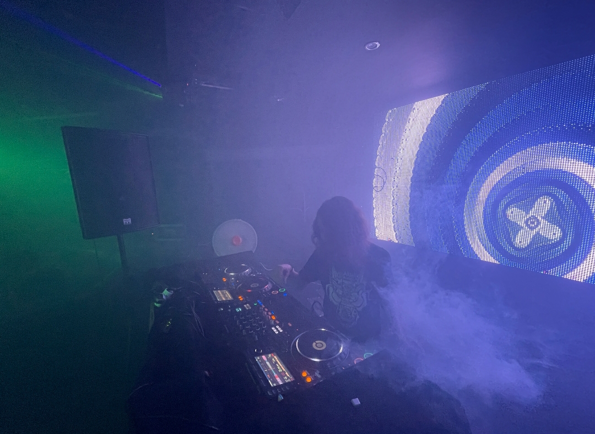
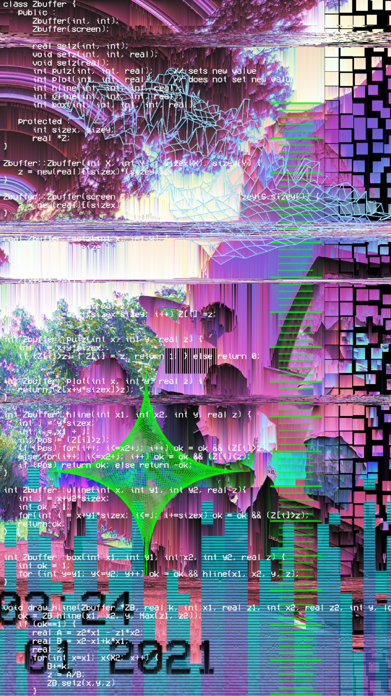
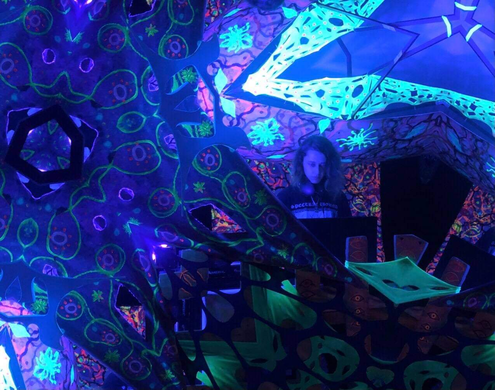

Egy pár éve belekezdtem a dj-zésbe, ami szinte azonnal a kedvenc szabadidős elfoglaltságommá vált, és olyan szerencsés helyzetbe kerültem, hogy sok ismerőst és barátot szereztem ennek révén, akik már régebb óta munkálkodnak a szcénában, ezáltal lehetőségem adódott közönség előtt megpróbáltatni magam, mely később még több alkalmat szült, fesztiválok és kisebb-nagyobb bulik keretein belül.
Néhány fellépés után a közeli barátaimmal és zenésztársaimmal úgy döntöttünk, megpróbálunk saját lábra állni, és önállóan rendezvényeket szervezni. Rendkívül sok megpróbáltatás, energia- és időbefektetéssel már 3 sikeres saját szervezésű eseményen vagyunk túl, és továbbra is azon dolgozunk, hogy ezeknek a számát növeljük.
Első buli

Promo

Első fesztivál
